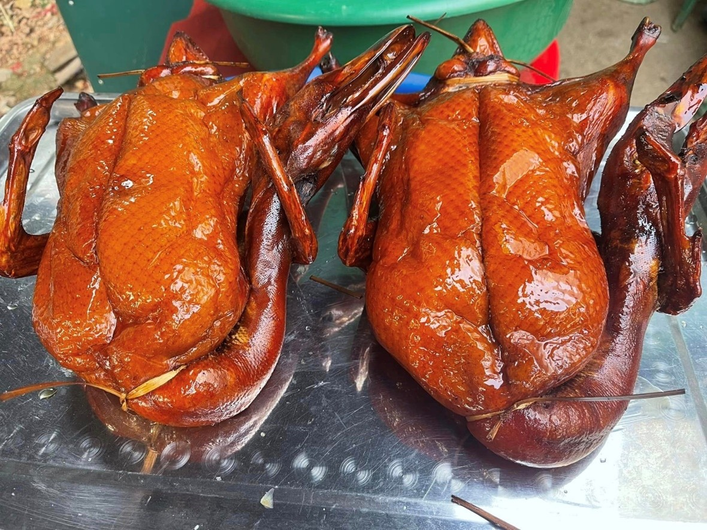
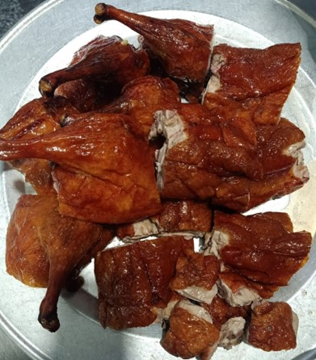

Vịt quay bảy vị
Tỉnh Cao Bằng nước ta cũng có một món vịt quay mà khi ăn ai cũng phải tấm tắc đó là món vịt quay 7 vị. Gọi là món vịt quay 7 vị vì người Cao Bằng dùng đến 7 loại gia vị khác nhau để ướp món thịt vịt này.
Không phải như món vịt thông thường, để có món vịt quay 7 vị đặc sản Cao Bằng, ngay từ khâu chọn vịt đã rất công phu. Vịt cỏ không dùng được, ngược lại vịt quá to, nhiều mỡ cũng bị loại. Vịt vừa phải, chắc thịt, sáng lông, nặng khoảng 1,8 kg, 2 kg được làm sạch, mổ moi cho khéo rồi nhúng qua nước sôi làm săn thịt.
Quan trọng nhất là khâu ướp vịt. Mắm, muối hoà lẫn trong nước 7 vị (7 vị đó có lẽ là bí quyết riêng của người Tày sống ở miền đông tỉnh Cao Bằng, bởi chỉ cần đi sang miền Tây, món vịt đã không còn mang cái vị lạ hấp dẫn ấy nữa) rút từ từ vào bụng vịt để gia vị ngấm sâu vào từng thớ thịt. Một chiếc lạt tre dẻo, chẻ mỏng và chuốt nhọn đầu dựng làm kim, khâu bụng vịt, giữ cho nước không chảy ra ngoài.
Vịt được thổi phồng và chần qua nước sôi một lần nữa, sau đó rưới mật ong và quét dấm lên khắp thân. Cách làm này khiến cho thịt vịt vừa mềm, vừa có vị đậm của mật ngọt, lại không bị khô da khi nướng trên than hồng.